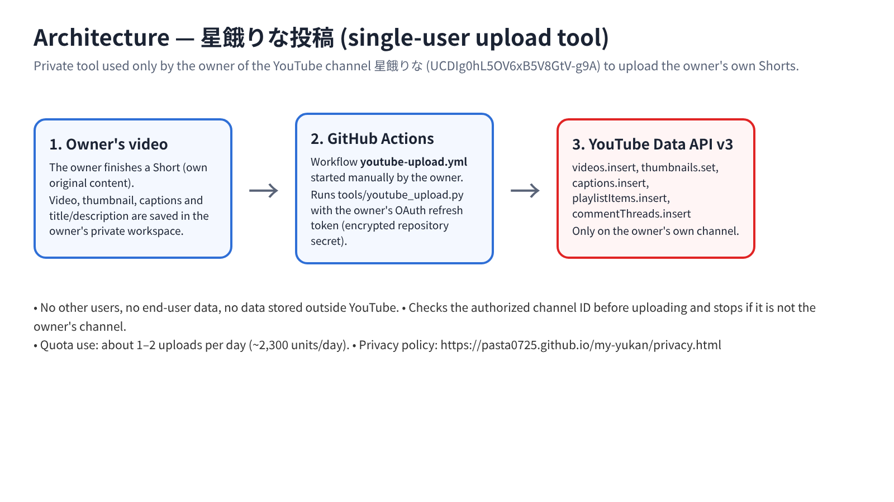
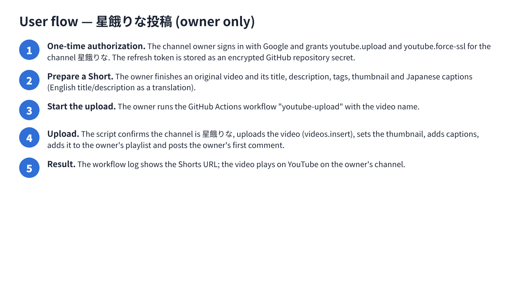

A single-user tool used only by the owner of the YouTube channel 星餓りな to upload the owner's own original Shorts (with thumbnail, Japanese captions, an English translated title/description, playlist entry and the owner's first comment). It is not offered to anyone else.


日本語：YouTubeチャンネル「星餓りな」の運営者が、自分で作った動画を自分のチャンネルに投稿するためだけの個人用ツールです。